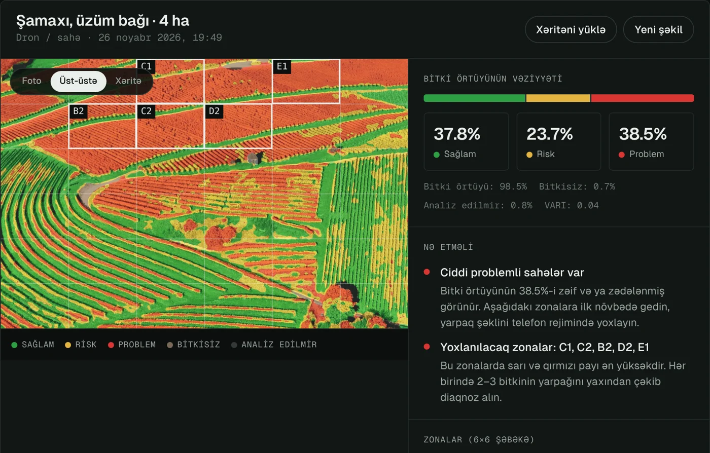
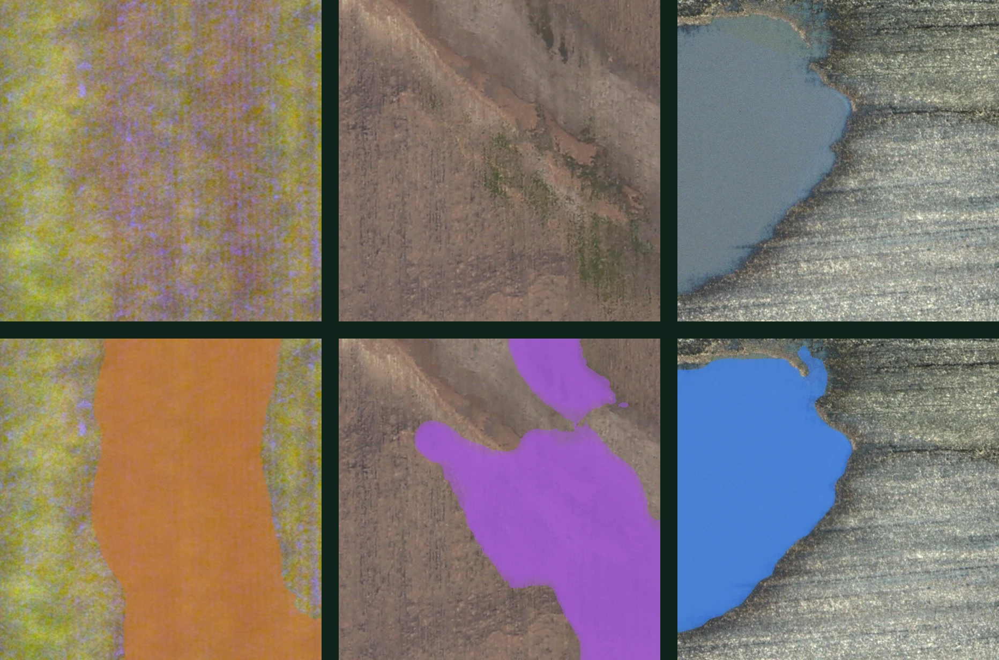
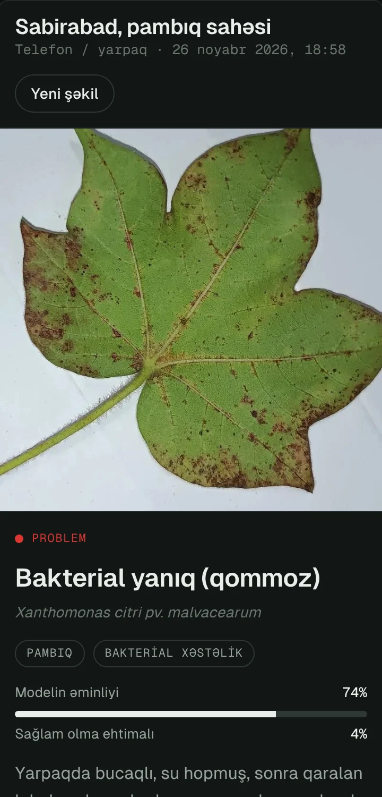

01 · Dron rejimi
Sahənin sağlamlıq xəritəsi
- Yaşıl sağlam, sarı risk, qırmızı problem zonaları
- Hər zonanın faizi və ən problemli zonaların siyahısı (A1–F6)
- Bitkisiz sahələr, su və yollar ayrıca göstərilir
- Hər zona üçün qısa tövsiyə

Məhsul
VisionX bir dron paketi və bir tətbiqdir. Adi RGB dron sahəni çəkir, tətbiq isə şəkli sağlamlıq xəritəsinə çevirir, problemin səbəbini tapır və fermerə nə etməli olduğunu azərbaycanca deyir. Multispektral sensor, peyk və bahalı proqram lazım deyil.
Dron paketi
DJI Mini sinfi: 249 q, 48 MP kamera, təxminən 30 dəqiqə uçuş.
Bir gündə 60–100 hektarı uçmaq üçün kifayətdir.
Sahə xəritəsi, zonalar, AI səbəblər, yarpaq diaqnozu və AI köməkçi. İlk mövsüm pulsuz.
Sahəyə uyğun uçuş marşrutu qurulur, fermerə bir günlük təlim verilir.
Texniki göstəricilər
Necə işləyir
Dron marşrutla sahənin üstündən uçur və adi rəngli şəkillər çəkir.
Şəkillər telefona köçürülür və tətbiqə əlavə olunur.
Model sahəni zonalara bölür, problemli yerləri və səbəbini tapır.
Fermer yalnız qırmızı zonalara gedir, dərmanı yalnız orada istifadə edir.
Tətbiq
01 · Dron rejimi

02 · AI səbəblər
Bir düymə ilə ayrıca seqmentasiya modeli işə düşür və şəkildə beş problem növünü işarələyir.

03 · Telefon rejimi

04 · AI köməkçi
Nəticə ekranında köməkçiyə yazırsınız və o, VisionX-in tapdıqlarına əsaslanaraq azərbaycanca cavab verir.
Hansı zonaya birinci gedim?
Köməkçi ən problemli zonaları və onların payını nəzərə alaraq yoxlama sırasını və görüləcək addımları izah edir.
Nümunə sual
Dəqiqlik
Yarpaq diaqnozu
Dron AI səbəblər
Dron modeli Agriculture-Vision datası (ABŞ, təyyarədən çəkilmiş şəkillər) üzərində öyrədilib və tədqiqat demosudur. Azərbaycan sahələrində dəqiqliyi pilotda yerli şəkillərlə yoxlanılacaq. Mənbələr: şəkil və data mənbələri.
Qiymətlər
2 500 ₼-dan
5 ₼ / ha
15 ₼ / ha
Müqayisə: ABŞ-da dron xidməti tək bir uçuş üçün 20–37 ₼/ha-dır. Dron paketinin qiyməti dronun yerli satış qiymətindən asılıdır.
Canlı demo
Sahənin və ya yarpağın şəklini yükləyin. Analiz brauzerinizdə gedir.